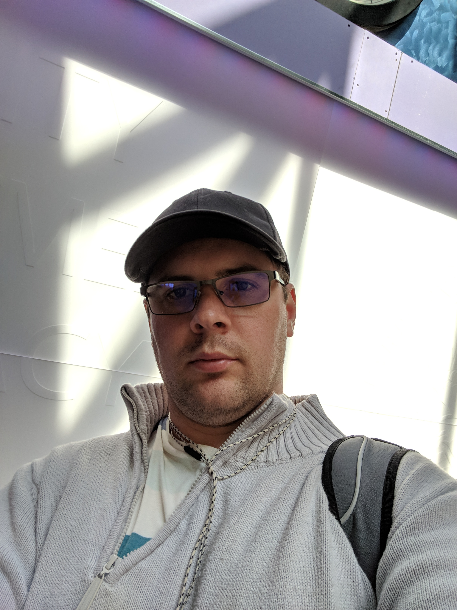
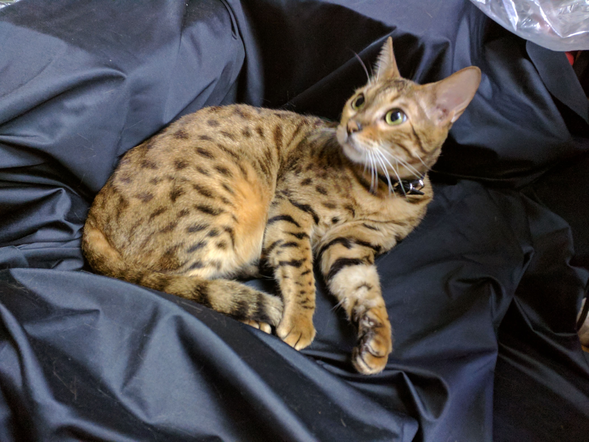

The Journey of Bogdan Kowaltchook

Greetings I am Bogdan. There is nothing really greatly special about me.
I like adventure puzzle video games and tinker with some electronics and make my chromebook do things that it was not designed to do.
Past life
the most important parts of my pivot points in my life.
- I was born in Kiyv, Ukraine
- lived in Debrecen, Hungary until I was 7 years old
- then we moved back to central Ukraine. When I was 15
- Migrated to Brooklyn, NYC at 15 years old
- Joined United states Marine Corps at 19
- Honorably served four years and loved serving my country after 4 years
- At 24 went to Community College
- at 26 Went to Baruch College
- At 29 Dropped out of Baruch College
- This is a period until this moment of January 19th, 2020 I've been enjoying myself, traveling around Ukraine
Present life
Currently, I've decided to change my life. Now I've joined Code Immersives NYC
in determination to a journey of becoming programmer and a better person. And the way I'm achieving this is:
- Quitting smoking
- Eating healthy
- running everyday plus one day for recovery
- Improving my cardiovascular system and cognitive abilities
- meditating for 20 minutes each day
- being mindful and compassionate towards others
- strengthening my focus and concentration
- reading books at least an hour a day
Additional Information
I have github account and a work in progres blog which will go live most likely on January 30th, 2020
My favourite pet cat Tesla

If you want to be updated with the most recent news on the blog development please input your email address